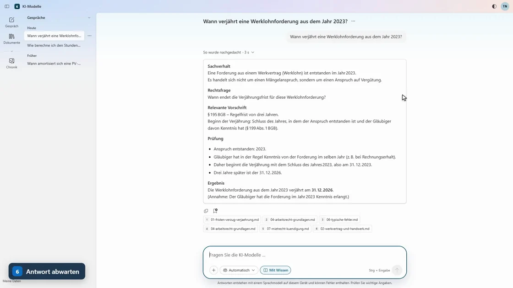
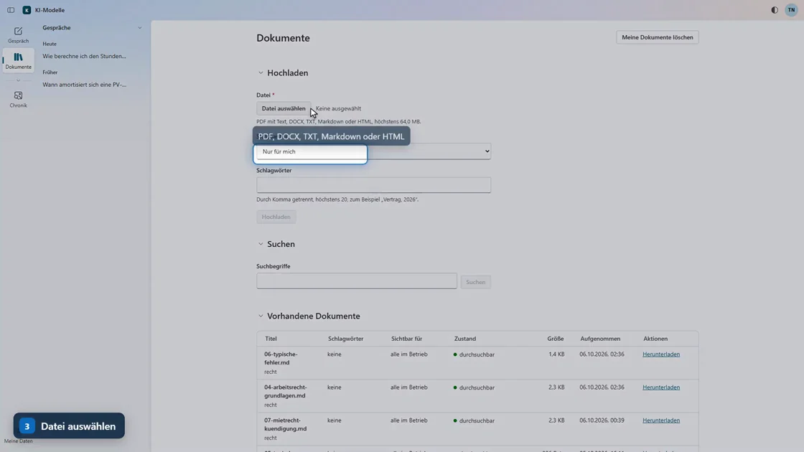
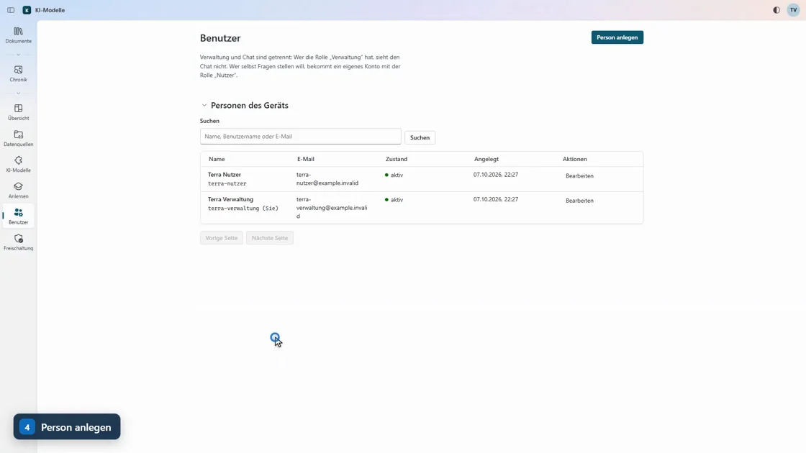

Lokale KI
Die KI läuft direkt auf einem kompakten Gerät in Ihrem Unternehmen.
LOKALE KI FÜR DEN MITTELSTAND
Ihre eigene KI im eigenen Haus.
Die lokale KI arbeitet mit Ihren Unterlagen und liefert Antworten mit Fundstellen. Auf Ihrem Gerät oder einem eigenen Server in Deutschland. Optional als Hybrid.
← Zum Erkunden wischen →
Optionaler Hybrid-Modus · schematische Darstellung
FÜR VIELE BRANCHEN
EIGENKERN unterstützt Unternehmen und Organisationen in ganz Deutschland – von der Steuerkanzlei bis zur Kommune.
SO BEGLEITEN WIR SIE
Wir liefern nicht nur Technik – wir begleiten Sie von der Analyse bis zum täglichen Einsatz.
Wir sichten Ihre Ordner, Daten und Dokumente und klären die passende Struktur.
Wir priorisieren, was im Alltag am meisten Zeit und Nerven kostet.
Hardware und Software kommen vorbereitet; Ihre Ordnerstruktur bleibt.
Kurze Lernvideos und Einführung helfen bei Bedienung und Grenzen.
Updates, Hilfestellung und passende Erweiterungen begleiten den Betrieb.
DREI WEGE ZUR PASSENDEN KI
Ob direkt in Ihrem Büro, auf einem eigenen Server in Deutschland oder im Hybrid-Modus – Sie entscheiden, wie Ihre KI arbeitet.
DAS WÄCHTER-PRINZIP
Der Wächter erstellt lokal eine pseudonymisierte Schattenkopie Ihrer Dokumente. Nur im optionalen Hybrid-Modus bearbeitet eine Cloud-KI diese Kopie. Die Originale bleiben in Ihrer eigenen Umgebung.
Ihre Dokumente bleiben in Ihrer Umgebung, z. B. Verträge, Akten und Fachunterlagen.
Der Wächter ersetzt sensible Namen lokal durch Platzhalter, z. B. Person_01 und Firma_01.
Nur im Hybrid-Modus verarbeitet die gewählte Cloud-KI die pseudonymisierte Schattenkopie.
Die Antwort kommt lokal zurück; erst dort werden die Platzhalter durch echte Angaben ersetzt.
Ihre Originaldateien werden für den optionalen Cloud-Schritt nicht als Original an den Cloud-Dienst übertragen. Stattdessen erstellt der Wächter lokal eine pseudonymisierte Schattenkopie. Die Zuordnung von Platzhaltern zu echten Namen verbleibt in Ihrer Umgebung.
DER UNTERSCHIED
Fünf Kriterien für eine informierte Entscheidung – je nach Cloud-Anbieter und gewähltem Betriebsmodell.
Wichtig: Nur im optionalen Hybrid-Modus werden Inhalte einer pseudonymisierten Schattenkopie an den ausgewählten Cloud-Dienst gesendet. Die Originaldokumente bleiben in Ihrer Umgebung. Cloud-Angebote unterscheiden sich je nach Anbieter, Region und Vertrag.
KOSTEN & LEISTUNG
Hardware und Software einmalig erwerben, zusätzliche Leistungen nach Bedarf wählen – ohne Kosten pro Frage oder Nutzer.
Persönlich beraten lassenHardware und KI-Software
Zusatzpakete nach Bedarf
Erweiterungen für Ihren Bedarf
Ihr individuelles Angebot erhalten Sie nach der Vorab-Analyse Ihrer Unterlagen – transparent und auf Ihren Betrieb abgestimmt.
EIGENKERN IN DER PRAXIS
Drei kurze Videos zeigen, wie Sie die lokale KI im Arbeitsalltag bedienen.

ERSTE SCHRITTE · TEIL 1User ChatFragen stellen und Antworten mit Quellen prüfen.
ERSTE SCHRITTE · TEIL 2Dokumente einlesenEigene Unterlagen einlesen und organisieren.
ERSTE SCHRITTE · TEIL 3Verwaltung, Überblick, Benutzer und FreischaltungBenutzer, Rechte und Geräteeinstellungen verwalten.Originale EIGENKERN Produktvideos – lokal eingebunden, ohne YouTube. Wiedergabe nur nach Klick.
FAQ & BERATUNG
Alles Wichtige zur lokalen KI – verständlich erklärt. Für alles Weitere sind wir persönlich für Sie da.
Verständlich. Persönlich. Ohne Fachchinesisch.Ihre Originaldokumente bleiben auf dem lokalen Gerät in Ihrem Unternehmen oder in Ihrer dedizierten Serverumgebung in Deutschland. Im optionalen Hybrid-Modus wird nur eine pseudonymisierte Schattenkopie an die ausgewählte Cloud-KI übergeben.
Die lokale KI verarbeitet Ihre eigenen Unterlagen in einer von Ihnen kontrollierten Umgebung und zeigt die Fundstellen ihrer Antworten. Anders als bei vielen Cloud-Angeboten entstehen keine separaten Gebühren pro Frage oder Nutzer.
Der Wächter ersetzt vertrauliche Angaben durch Platzhalter und erstellt eine Schattenkopie. Nur diese kann im Hybrid-Modus an eine Cloud-KI gesendet werden. Nach der Antwort werden die echten Angaben lokal wieder eingesetzt.
Für Unternehmen und Einrichtungen, die mit eigenen Dokumenten arbeiten: etwa Steuerkanzleien, Arztpraxen, Rechtsanwaltskanzleien, Handwerksbetriebe, Schulen oder Kommunen.
Das hängt von Ihren Unterlagen und Ihrer IT-Umgebung ab. EIGENKERN prüft zunächst Ihren Bedarf, richtet das System ein und führt Ihr Team in die Nutzung ein. Den Ablauf besprechen wir gemeinsam.
Ja. EIGENKERN bietet einen Test mit Ihren Unterlagen an – lokal oder auf einem dedizierten KI-Server in Deutschland. Löschung und Sicherungskopien werden vorab schriftlich vereinbart.
Testmöglichkeiten ansehenPERSÖNLICH & UNVERBINDLICH
Lassen Sie sich persönlich beraten – unverbindlich und individuell.